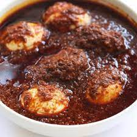

Dorowot Recipe

Description
Doro Wat is one of the most famous of all African dishes.
You will find it in every Ethiopian restaurant and virtually
anyone who is familiar with African cuisine will have heard
of it. Another version, though not as commonly known here,
is Sega Wat, made with beef (fyi, you’ll find recipes online
calling it Sik Sik Wat, but I’ve confirmed with the chefs of
several Ethiopian restaurants that it’s Sega Wat).
You can directly substitute beef for chicken and follow
the same cooking instructions.
Ingredients
- Beef filet – well-trimmed
- Anchovy paste – for a unique salty and savory flavor
- Seasonings – cayenne pepper, salt, garlic powder, ground cardamom
- Clarified butter – or ghee
Steps
- Set out a large high-powered food processor.
Make sure to trim all the silver skin and fat
off the fillet and cut the fillet into large
chunks. Place in the food processor.
- Add the cayenne, salt, anchovy paste,
garlic powder, and cardamom. Pulse to chop
the fillet into fine chunks. You can choose
to stop when the beef resembles ¼ inch chunks,
or chop smaller into ground steak.
- Once the texture is to your liking, melt the
clarified butter and pour over the top. Mix the
butter in by hand, do not pulse.
- Serve the freshly prepared steak tartare
room temperature, or seal in a container and
refrigerate for 30 minutes (or more) to enjoy
cold.